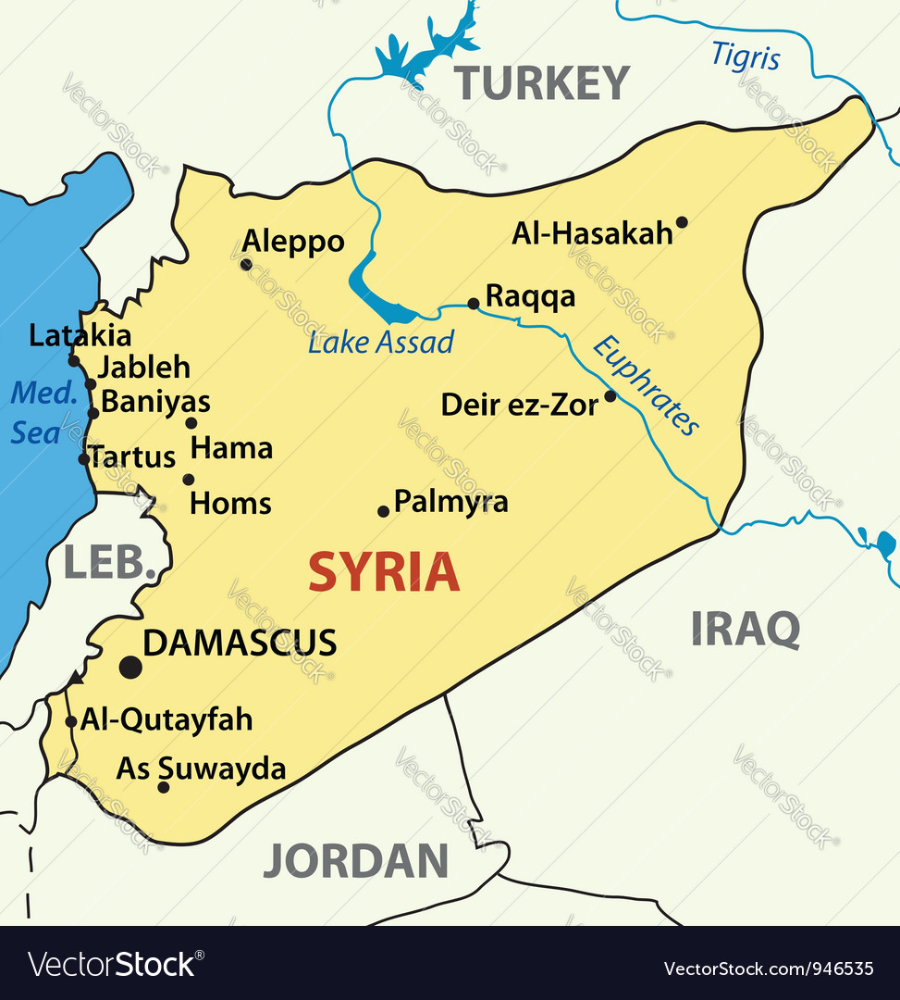

Bio
Here is a little information about me.
Born and raised in Aleppo, Syria, I moved to the United States in 2016. I lived in North Carolina from 2016 to 2018 before moving to Atlanta, Georgia, to pursue a bachelor’s degree in Computer Information Systems.
Before coming to the United States, I lived in Turkey between 2013 and 2016. I enjoy cooking, learning languages, and connecting with people from different backgrounds.
I speak Arabic, Kurdish, English, and Turkish, and I am still learning Spanish.